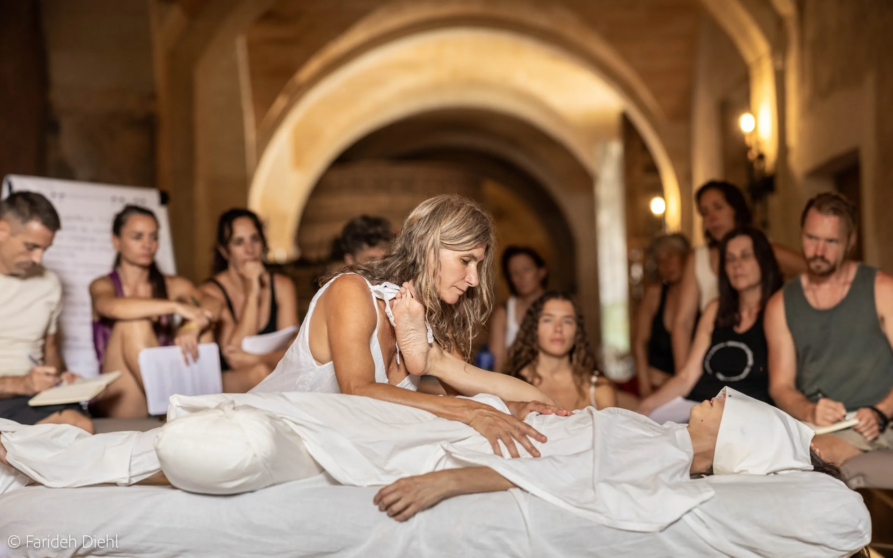
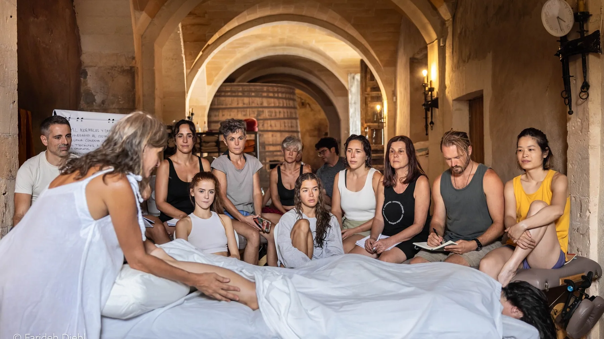
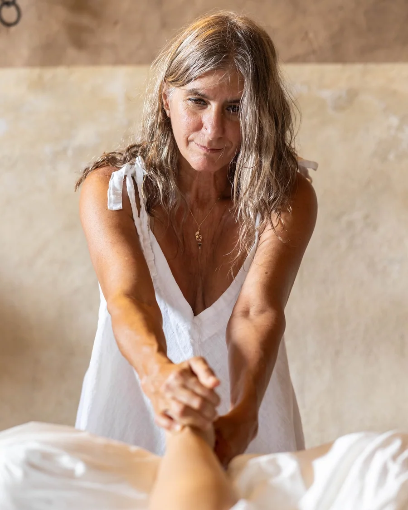
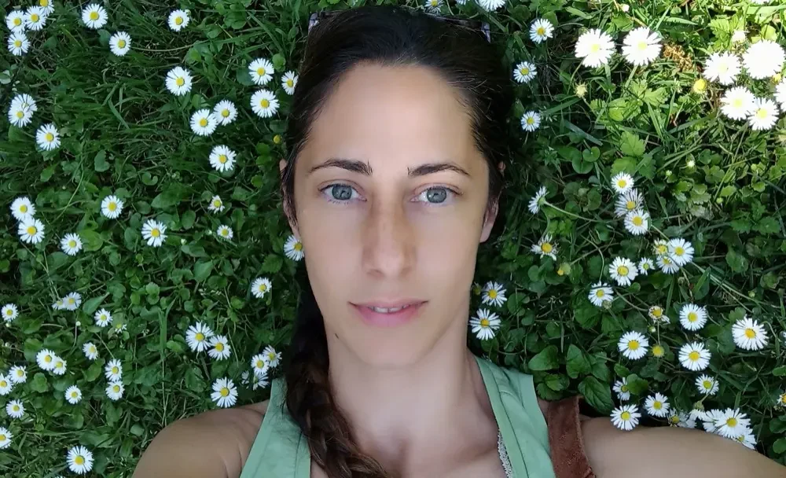

Spazio Bodywork® · formación profesional certificada
Formación Anual
de Masaje Californiano
Psicosomático
Barcelona o Madrid
Formato fin de semana
500 € de matrícula
Los 500 € se descuentan de los dos últimos módulos.
Inicio de formación
Barcelona 20-21 de febrero de 2027
Madrid 17-18 de abril de 2027
Para quién es
¿Es tu formación?
No es un curso de fin de semana: vas a adquirir conocimientos, habilidades y experiencia para trabajar como terapeuta acompañando con herramientas de regulación del sistema nervioso y trauma.
Es para ti si…
- Deseas profundizar en el arte del masaje a través de un recorrido de aprendizaje, práctica e integración.
- Quieres desarrollar las herramientas necesarias para ofrecer un masaje integral, acompañar procesos de transformación y cultivar una mayor conciencia corporal en tus clientes.
- Buscas comprender el sistema nervioso, la regulación emocional y el trauma, integrando estos conocimientos en una práctica corporal consciente y respetuosa.
- Valoras aprender en un grupo estable, dentro de un espacio seguro donde compartir experiencias, crecer y acompañarse mutuamente.
- Estás dispuesto a explorar tu propio cuerpo, desarrollar tu sensibilidad y vivir el aprendizaje desde la experiencia.
No es para ti si…
- Buscas aprender técnicas de masaje de forma rápida, sin profundizar en la escucha, la presencia y la relación con el cuerpo.
- No puedes comprometerte a dedicar un fin de semana al mes durante el recorrido formativo.
- Prefieres una formación exclusivamente teórica, sin experimentar el trabajo corporal en ti mismo.
- No te sientes preparado para participar en un proceso de aprendizaje que también invita a la exploración y al autoconocimiento.
- Buscas resultados inmediatos, sin dedicar tiempo a la práctica, la integración y el desarrollo progresivo de tus habilidades.
Fechas de los diez módulos
Calendario del formato de fin de semana
Un fin de semana al mes, sábado y domingo de 10:00 a 19:30, en Barcelona o en Madrid.
Barcelona
Nuevo grupo · Inscripción abierta- Módulo 01
- Módulo 02
- Módulo 03
- Módulo 04
- Módulo 05
- Módulo 06
- Módulo 07
- Módulo 08
- Módulo 09
- Módulo 10
Matrícula de 500 € a descontar de los dos últimos módulos
Madrid
Grupo en curso- Módulo 01
- Módulo 02
- Módulo 03
- Módulo 04
- Módulo 05
- Módulo 06
- Módulo 07
- Módulo 08
- Módulo 09
- Módulo 10
Grupo cerrado: ya no admite nuevas incorporaciones
Inscripción
Precio y formas de pago
10 módulos · 1 fin de semana al mes
- Reserva de plaza: 500 € de matrícula (se descontará de los últimos 2 módulos)
- Precio por módulo: 250 €
- 2.250 € si pagas la formación completa por adelantado (10 % dto.)
-
Precio por módulo
La formación, mes a mes
250€ / módulo
- Diez fines de semana de formación, un fin de semana al mes
- Sábado y domingo, de 10:00 a 19:30
- Teoría, práctica y experiencia vivencial con el mismo grupo
- Barcelona o Madrid
- Pagas hoy · se descuenta de los dos últimos módulos
- 500 €
Los 250 € de cada módulo se abonan antes de cada fin de semana. La formación completa, pagada por adelantado, tiene un 10 % de descuento. La plaza queda confirmada en el momento del pago, no antes.
Reservar mi plaza · 500 €Matrícula
500 €
Se descontará de los últimos 2 módulos

Programa
Diez módulos, dos mitades
Más de 200 técnicas en diez fines de semana. Un principio atraviesa el año: no esfuerzo, menos es más.
Parte 1 · Bases
Los cinco primeros módulos: las bases del masaje californiano con los elementos de regulación del sistema nervioso.
- Autorregulación, setting terapéutico y regulación del sistema nervioso.
- Terminología somática: neurocepción, propiocepción e interocepción. Descarga, vórtice-contra vórtice.
- Qué es el trauma y cómo se manifiesta en el cuerpo; la fisiología del sistema de defensa.
- Acompañar procesos emocionales.
- Ejercicios somáticos y meditaciones activas basadas en las prácticas de 5 ritmos y otras dinámicas.
Parte 2 · Profundización
Los cinco últimos: el detalle del masaje californiano y la teoría polivagal.
- El rol terapéutico.
- Trabajo somático de límites.
- Respuestas de defensa en camilla: lucha, huida y congelación.
- Detectar las huellas traumáticas y re-significar el trauma.
- Integrar: caderas, antebrazos y muñecas, capas profundas del cuello y secuencias en supino.
El recorrido
Dónde está este paso
Del primer taller a la carrera profesional.
-
Talleres e introductorios
El primer contacto con el masaje californiano y el trabajo corporal psicosomático.
-
Estás aquí
Formación Anual
Formación profesional certificada
Diez módulos a lo largo de un año: el oficio, el grupo y el tiempo para incorporarlo. Incluye certificado y es la carrera profesional.
Reseñas en Google
Lo que cuentan quienes han pasado
5,0 ★★★★★
- 323 reseñas Barcelona
- 20 reseñas Madrid
Reseñas publicadas en Google sobre Spazio Bodywork, tal como las escribieron sus autores.
5,0 de media · 323 reseñas en Barcelona · 20 en Madrid
-
★★★★★
«¡Maravillosa e inolvidable experiencia! Renovadora y nutritiva A todos los niveles profesional y personal. Estupendo equipo de profesionales. Un espacio y un lugar cálido y acogedor. Donde se siente el acompañamiento, la escucha y el cuidado del grupo, no solo a través del masaje, sino también de las dinámicas que se comparten que permiten conectar con nuestro interior bajar al cuerpo y disfrutar del momento presente. Un camino auténtico y profundo de auto conocimiento a través del contacto dando sino recibiendo. Gracias por todo lo vivido y compartido. a cada uno de los miembros de la escuela que lo hacen posible️»
-
★★★★★
«Ha sido todo un privilegio descubrir el Arte del Masaje Californiano bajo la amorosa y profesional guía de dos auténticas Maestras como son Sujati y María. Un viaje experiencial altamente recomendable por su holística función, pues no se limita únicamente a la enseñanza de una técnica de masaje, sino que además, te eleva en tu sendero espiritual… liberando, sanando y regulando nuestro preciado Sistema Nervioso. Agradecer infinitamente a todo el equipo de Spazio Bodywork y de Dimas su afectuoso recibimiento, así como la dulce atención y extremo cuidado con los que en todo momento cubrían los corazones y estómagos de los que llegamos siendo auténticos desconocidos, para salir formando parte de esta bella comunidad del Masaje Californiano engendrada por Sujati, una alma cuya dedicación y vocación son derramadas en sus talleres. Namaste»
-
★★★★★
«Descubrí el masaje californiano de una manera casual, podría decir que llegó a mi vida en el momento adecuado. Seguí mi intuición y me lance a realizar el curso de iniciación. Puedo afirmar que ha sido un antes y un después en mi vida. Jamás pensé que algo tan simple pudiera tener tanto que enseñarme y que descubrirme sobre mi verdadero ser. Invito a todos a seguir su intuición y probar, si el algún momento, este masaje llega a tu vida.»
-
★★★★★
«Nunca había contactado con el masaje Californiano y esta experiencia en Mallorca ha sido para mi de profunda transformación, un viaje hacia mi parte mas afectiva, compasiva y humana. Ha merecido la pena!!! El entorno, la sala, el contacto, la presencia, la atención cuidadosa, el respeto hacia mi propio cuerpo y el de los demás… Maravilloso!!! Gracias infinitas a Sujati y a todo el equipo por vuestra calidad humana y profesional. Hasta pronto!!!»
- Leer todas las reseñas en Google
Instructora
Quién enseña
En el trabajo corporal, la manera de tocar se aprende también recibiéndola. Por eso importa quién enseña y quién acompaña en la sala.

Sujati
Creadora y directora de Spazio Bodywork®.
Fundó la primera escuela de Masaje Californiano en España (2006). Más de 23 años de experiencia profesional: comenzó su formación como terapeuta en India en 1994, vivió dos años en la Comuna Internacional de Osho, se formó en Masaje Californiano en 2000 en la Oasis Massage School (donde fue asistente e instructora seis años) y está certificada internacionalmente como terapeuta de Masaje Esalen® por el Instituto Esalen de Big Sur (California), con formación en Experiencia Somática®.

María Lucas
Directora de Espacio Calithai, la sede de Madrid.
Terapeuta en Masaje Californiano y Masaje Esalen, directora de Espacio Calithai Masajes. Comienza su formación en Masaje Californiano viviendo en Argentina en el año 2006 donde descubre la Escuela de Masajes y Artes Curativas Oasis. En el 2008 se instala de nuevo en Madrid donde conoce a Sujati, con quien colaborará como asistenta para el Instituto Spazio Bodywork®.
Realiza la Certificación en Masaje Esalen, Tejido Profundo (con Yamuna y Roger – Oasis) y talleres de especialización con Ingrid May (Oasis). En el 2015 inaugura su propio espacio de trabajo en Madrid: Espacio Calithai Masajes, donde se dedica a dar sesiones de Masaje Californiano Esalen y a abrir el espacio de prácticas para los alumnos.
«Contemplo el cuerpo como una llave de exploración interna que nos conduce al silencio y a la alegría intrínseca de la vida.»
La reserva
Qué pasa cuando pulsas «Reservar»
-
Te informas
Aquí o escribiéndonos, antes de decidir nada.
-
Eliges sede y fecha
La entrada de Barcelona o el grupo de Madrid, con el calendario a la vista.
-
Pagas la matrícula
Matrícula de 500 €, que se descuenta de los últimos 2 módulos.
Barcelona 20-21 de febrero de 2027
¿Madrid? Escríbenos por WhatsApp
+34 693 059 088 (teléfono y WhatsApp)
info@spaziobodywork.com
La Formación Anual es una formación vivencial. No es una terapia ni sustituye a un tratamiento.
Dudas
Preguntas frecuentes
¿Necesito experiencia previa?
La formación arranca donde terminan los talleres y los cursos introductorios: las bases del masaje californiano y los elementos de regulación del sistema nervioso. Si no has hecho ninguno de ellos, escríbenos y te decimos por dónde empezar.
¿Qué tengo que hacer para reservar mi plaza?
Elegir sede y fecha y pagar la matrícula de 500 €. La plaza queda confirmada en el momento del pago, no antes.
¿Y si al final no puedo hacer la formación?
Si cancelas antes del inicio, te devolvemos los 500 € de la matrícula íntegros. Si no abrimos el grupo, también.
¿Cuánto se paga y cuándo?
250 € por módulo. Hoy pagas 500 € de matrícula, que se descuentan de los dos últimos módulos. Si pagas la formación completa por adelantado, son 2.250 € (10 % de descuento).
¿Cuánto dura cada módulo?
Un fin de semana completo: sábado y domingo de 10:00 a 19:30, con pausa al mediodía.
¿Dónde se imparte?
En Barcelona, en Spazio Bodywork (C/ Viladomat 152, 2ª planta), y en Madrid, en Espacio Calithai (C/ Gonzalo de Córdoba 17, oficina B).
¿Puedo pagar a plazos?
Sí: 250 € por módulo, antes de cada fin de semana. La matrícula de 500 € se descuenta de los dos últimos módulos.
Dudas y consultas
¿Te queda alguna duda?
Escríbenos y te contestamos en menos de 24 h.